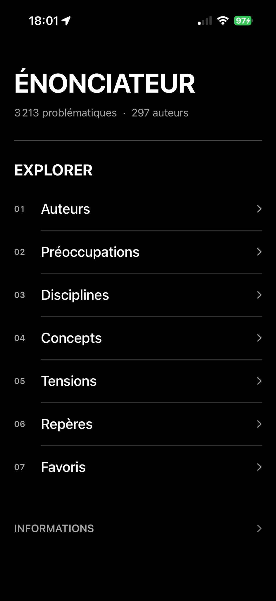
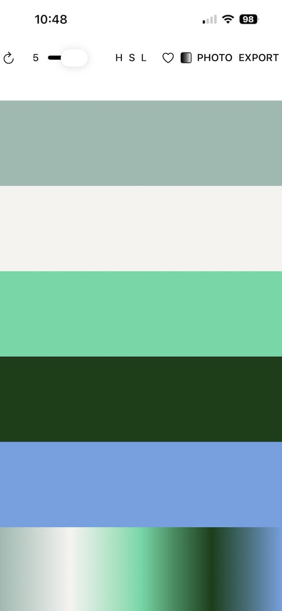
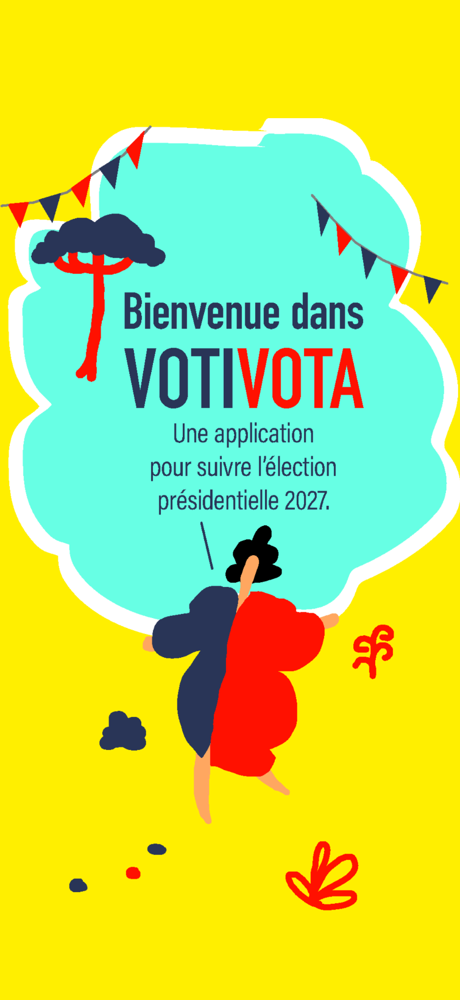

DEGAN-Apps
Applications indépendantes.

ÉNONCIATEUR
Explorer l'histoire du design et de l'architecture à travers des problématiques documentées.

PIPILANPIPI
Composer, explorer et partager des palettes de couleurs.

App Store : à venir
VOTIVOTA
Tirer au sort parmi les candidatures à l'élection présidentielle de 2027. Juste pour voir.